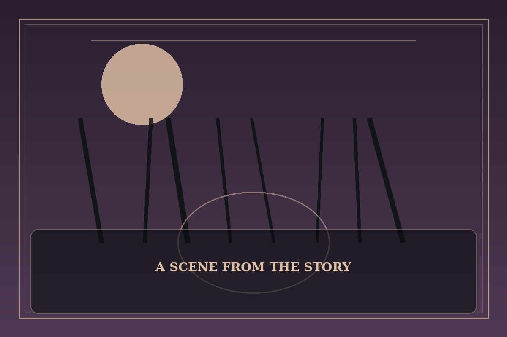

Lord of the Mysteries
Synopsis
A careful investigator follows coded letters, secret societies, and impossible phenomena through a city where knowledge has a price. Each clue reveals a wider mystery, and every answer demands caution.
Chapter 1: A Letter Beneath the Gaslight
The envelope arrived without a stamp, sealed with a circle of dark wax. Inside was a map of streets that did not exist on any public chart and a note written in a hand that resembled his own.
At midnight, Elias followed the map to a narrow shop between a clockmaker and a shuttered chapel. The shopkeeper asked what he was willing to forget in exchange for the truth. Elias nearly left, until he saw his missing sister’s initials carved into the counter.
He paid with a memory he had guarded for years. A hidden drawer opened, revealing a second letter and a warning: the first mystery was never the dangerous one. Outside, every streetlamp went dark at once.

This fan-made sample is an original piece created for a student website project; it is not an official chapter of Lord of the Mysteries.